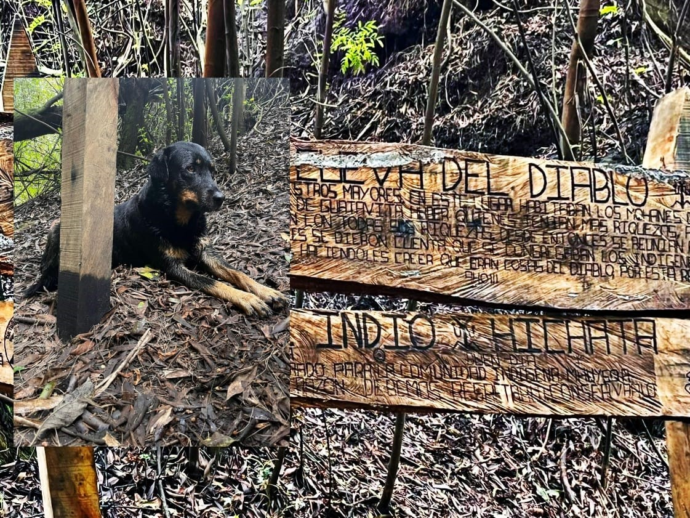

📅 Próximas Aventuras
Aquà encontrarás todas las salidas que tenemos programadas. Cada plan incluye el costo, punto de encuentro, y el link para unirte.

⛰️ Cueva del Indio y Peñas Blancas – Pet Friendly
Fecha: Sábado 31 de mayo
Hora: 6:00 a.m.
Costo: $54.900
Lugar: Terminal Norte
13 km aprox. | Dificultad: 3.5/5 | Clima: FrÃo | Altura: 2.600-2.900 msnm
Preguntar por el plan🏞️ Caminata y Canyoning en Sasaima
Fecha: Domingo 15 de junio
Hora: 6:00 a.m.
Costo: $64.900
Lugar: Modelia (Los tres elefantes)
4.5 km caminata + 1.5 km barranquismo | Dificultad: 3/5 | Clima cálido
Preguntar por el plan
🌊 Parchemos a Tobia Cundinamarca
Fecha: Domingo 22 de junio
Hora: 6:00 a.m.
Costo: Según actividad
Lugar: Portal 80
2 dÃas 1 noche | Trekking, piscina, torrentismo y más | Clima cálido
Preguntar por el plan
🧗 Caminata y escalada Rocas de Suesca
Fecha: Sábado 28 de junio
Hora: 6:00 a.m.
Costo: $85.000 (escalada no incluida)
Lugar: Portal 80
9 km aprox. | Dificultad: 2.5/5 | Clima: FrÃo
Preguntar por el plan